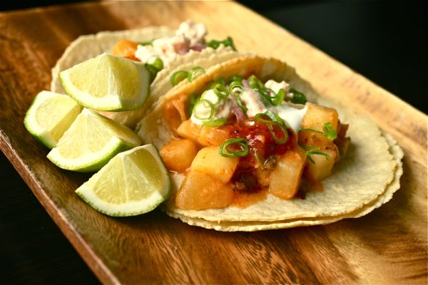

Tacos de Papa

Crispy, savory, and delightful - These tacos will keep hands and mouths
busy at the dinner table.
Who can say no to a crispy potato taco? They're a staple throughout Mexico
for good reason. After frying in batches, top these with tons of salsa
verde and cotija cheese, or pull out your family's favorite taco night
toppings. Bonus: These are a great way to use up leftover homemade mashed
potatoes.
Ingredients
- 2 cups water
- 1 (4 ounce) pkg mashed potatoes
- 1/2 cup shredded cheddar cheese
- 1 green onion, chopped
- 10 corn tortillas
Steps
-
Heat water in a medium saucepan to boiling. Remove from the heat and
stir in instant mashed potatoes. Mix thoroughly with a fork to moisten
all potatoes and let stand 5 minutes. Stir in Cheddar cheese, green
onion, and cumin.
- Preheat an air fryer to 400 degrees F (200 degrees C).
-
Wrap tortillas in a damp paper towel and microwave on high until warm,
about 20 seconds.
-
Spread 1 tablespoon potato mixture in the center of a tortilla and fold
over to make a taco. Repeat with remaining tortillas.
-
Working in batches, place tacos in the basket of an air fryer. Spray the
tops with cooking spray and cook until crispy, about 5 minutes. Transfer
to a serving platter and repeat to cook remaining tacos.